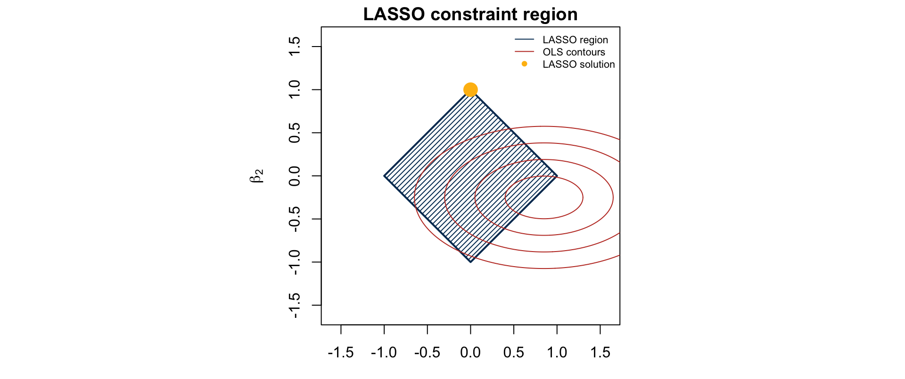
PSTAT 126: Linear Regression
UC Santa Barbara
2026-12-02
By the end of this lecture you will be able to:
Training error (RSS, \(R^2\), AIC) is measured on the same data used to fit the model — it rewards overfitting.
Cross-validation estimates how well the model predicts new, unseen observations by repeatedly holding out part of the data.
Adding a predictor always reduces training RSS. CV MSE can increase when you add a useless predictor — that is the signal we want for model selection.
Procedure:
Choose the model with the lowest \(\text{CV}_{(k)}\). \(k = 10\) is the standard choice — good bias-variance trade-off.
Stepwise and exhaustive methods pick a discrete subset of predictors — each variable is either fully in or completely out.
Practical problems:
LASSO offers a continuous alternative: it shrinks all coefficients toward zero and sets unimportant ones to exactly zero, combining estimation and selection in a single step.
OLS minimizes RSS alone:
\[\min_{\boldsymbol{\beta}} \sum_{i=1}^n \left(y_i - \beta_0 - \sum_{j=1}^p \beta_j x_{ij}\right)^2\]
LASSO adds an \(\ell_1\) penalty on the coefficient magnitudes:
\[\min_{\boldsymbol{\beta}} \underbrace{\sum_{i=1}^n \!\left(y_i - \beta_0 - \sum_{j=1}^p \beta_j x_{ij}\right)^2}_{\text{residual sum of squares}} + \;\lambda \underbrace{\sum_{j=1}^p |\beta_j|}_{\ell_1 \text{ penalty}}\]
The \(\ell_1\) constraint region is a diamond with corners on the coordinate axes.
The OLS solution (center of the red ellipses) lies off-axis, so the smallest ellipse that touches the diamond typically hits a corner — where one or more \(\beta_j = 0\).
This is why LASSO performs automatic variable selection, unlike Ridge regression whose \(\ell_2\) ball has no corners.

\(\lambda\) is not estimated from the data like \(\boldsymbol{\beta}\) — it is chosen by cross-validation.
cv.glmnet() procedure:
\(\lambda_{\min}\) minimizes prediction error. \(\lambda_{\text{1se}}\) applies the parsimony principle — choose the simplest model that is nearly as good.
A hospital surgical unit studied survival after liver surgery. Data were collected on a random sample of 108 patients.
Response: Survival time in days (right-skewed — typical for survival data)
Predictors:
| Variable | Description |
|---|---|
bloodclot (\(X_1\)) |
Blood clotting score |
progindex (\(X_2\)) |
Prognostic index |
enzyme (\(X_3\)) |
Enzyme function test score |
liver (\(X_4\)) |
Liver function test score |
age (\(X_5\)) |
Age in years |
gender (\(X_6\)) |
Gender (0 = male, 1 = female) |
alc_mod (\(X_7\)) |
Moderate alcohol use (indicator) |
alc_sev (\(X_8\)) |
Severe alcohol use (indicator) |
set.seed(126)
n <- 108
bloodclot <- round(runif(n, 2, 14))
progindex <- round(runif(n, 20, 95))
enzyme <- round(runif(n, 15, 85))
liver <- round(runif(n, 1, 6), 1)
age <- round(runif(n, 25, 70))
gender <- rbinom(n, 1, 0.40)
alc <- sample(0:2, n, replace = TRUE, prob = c(0.40, 0.35, 0.25))
alc_mod <- as.integer(alc == 1)
alc_sev <- as.integer(alc == 2)
log_surv <- 4.0 + 0.09*bloodclot + 0.013*progindex + 0.016*enzyme +
0.0005*liver - 0.003*age - 0.08*gender +
0.06*alc_mod + 0.40*alc_sev + rnorm(n, 0, 0.22)
survival <- round(exp(log_surv))
surgical <- data.frame(survival, bloodclot, progindex, enzyme,
liver, age, gender, alc_mod, alc_sev)
head(surgical, 4) survival bloodclot progindex enzyme liver age gender alc_mod alc_sev
1 570 10 47 45 1.1 66 0 1 0
2 499 7 75 62 1.6 59 0 0 0
3 496 10 87 20 4.2 69 0 0 0
4 620 10 31 82 3.4 66 1 1 0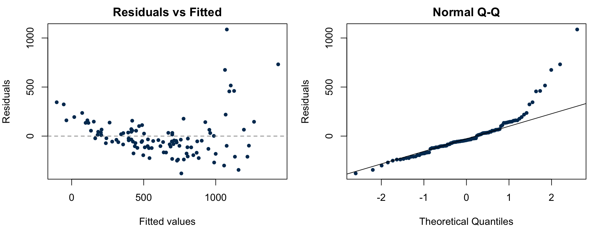
Clear funnel pattern and heavy tail — equal variance and normality are violated. We need to transform the response.
Box-Cox searches for the power \(\lambda\) such that \(Y^{(\lambda)}\) satisfies regression assumptions:
\[Y^{(\lambda)} = \begin{cases} (Y^\lambda - 1)/\lambda & \lambda \neq 0 \\ \log Y & \lambda = 0 \end{cases}\]
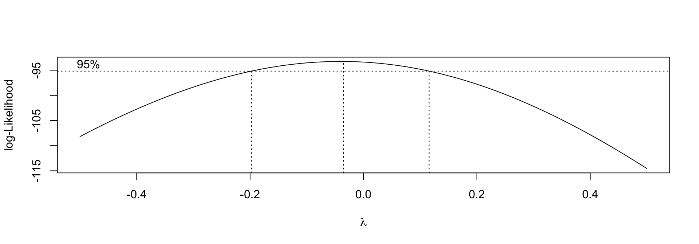
The 95% CI for \(\lambda\) contains 0 — a log transformation is appropriate.
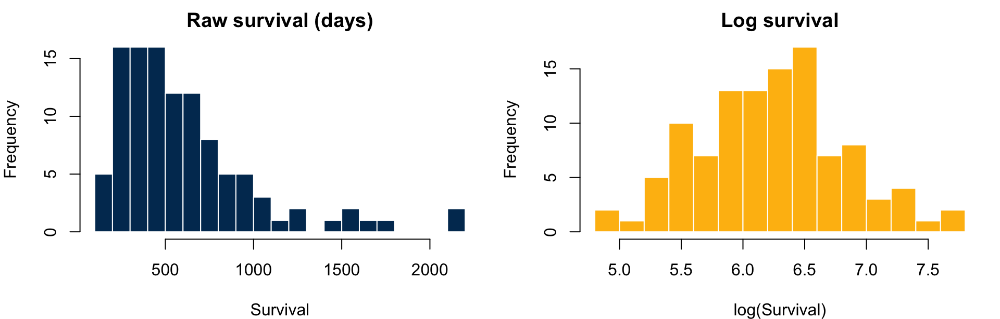
The log-transformed distribution is approximately symmetric. We will use log_surv as our response for all subsequent modeling.
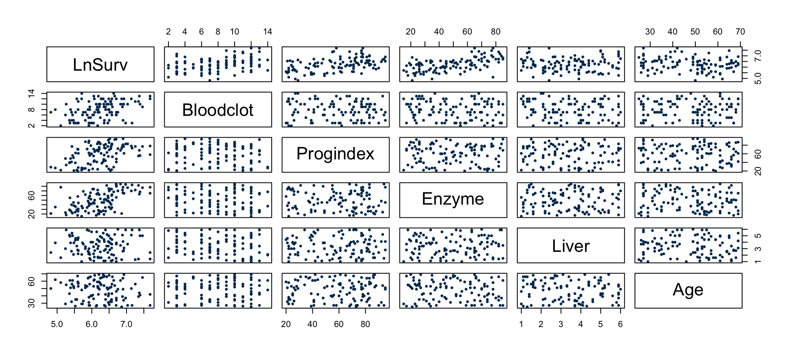
log_surv shows the clearest positive linear relationships with bloodclot, progindex, and enzyme. The relationships with liver and age are weaker.
par(mfrow = c(1, 2), mar = c(4, 4, 2, 1))
boxplot(log_surv ~ gender, data = surgical,
names = c("Male", "Female"), ylab = "log(Survival)",
main = "By Gender", col = c("#003660","#FEBC11"))
alc_f <- factor(surgical$alc_mod + 2*surgical$alc_sev,
levels = 0:2, labels = c("None","Moderate","Severe"))
boxplot(surgical$log_surv ~ alc_f, ylab = "log(Survival)",
main = "By Alcohol Use",
col = c("#f5f5f5","#FEBC11","#C0392B"))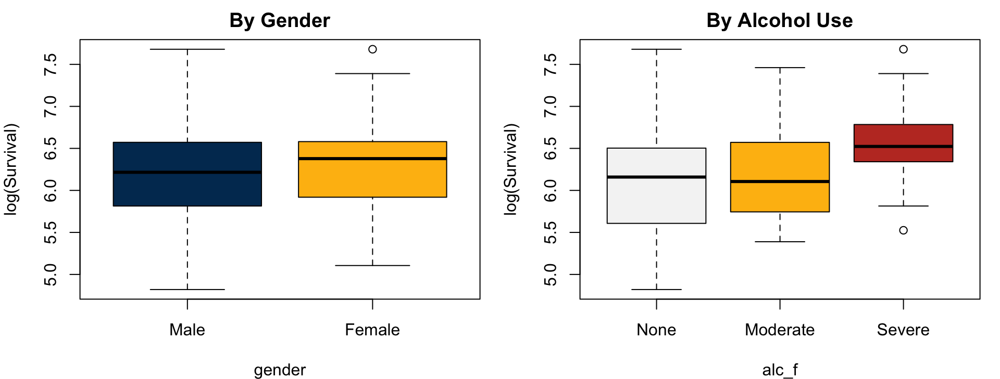
Severe alcohol use is associated with noticeably higher log survival time. Gender differences are small.
Call:
lm(formula = log_surv ~ bloodclot + progindex + enzyme + liver +
age + gender + alc_mod + alc_sev, data = surgical)
Residuals:
Min 1Q Median 3Q Max
-0.51149 -0.14471 -0.00367 0.15982 0.75262
Coefficients:
Estimate Std. Error t value Pr(>|t|)
(Intercept) 3.864138 0.159831 24.176 < 2e-16 ***
bloodclot 0.088593 0.007147 12.395 < 2e-16 ***
progindex 0.013382 0.001048 12.766 < 2e-16 ***
enzyme 0.017926 0.001144 15.671 < 2e-16 ***
liver 0.020014 0.016464 1.216 0.2270
age -0.002894 0.001739 -1.664 0.0993 .
gender -0.025258 0.048979 -0.516 0.6072
alc_mod 0.009202 0.053127 0.173 0.8628
alc_sev 0.345764 0.059978 5.765 9.3e-08 ***
---
Signif. codes: 0 '***' 0.001 '**' 0.01 '*' 0.05 '.' 0.1 ' ' 1
Residual standard error: 0.2386 on 99 degrees of freedom
Multiple R-squared: 0.8507, Adjusted R-squared: 0.8386
F-statistic: 70.5 on 8 and 99 DF, p-value: < 2.2e-16 Estimate Std. Error t value Pr(>|t|)
(Intercept) 3.8641 0.1598 24.1764 0.0000
bloodclot 0.0886 0.0071 12.3952 0.0000
progindex 0.0134 0.0010 12.7661 0.0000
enzyme 0.0179 0.0011 15.6709 0.0000
liver 0.0200 0.0165 1.2156 0.2270
age -0.0029 0.0017 -1.6640 0.0993
gender -0.0253 0.0490 -0.5157 0.6072
alc_mod 0.0092 0.0531 0.1732 0.8628
alc_sev 0.3458 0.0600 5.7648 0.0000Clearly significant: bloodclot, progindex, enzyme, alc_sev
Not significant at \(\alpha = 0.05\): liver, age, gender, alc_mod
With 8 predictors, the model is complex. Can we find a simpler model that fits just as well? This is the goal of variable selection.
We will apply five approaches and compare their results:
drop1)step)leaps)glmnet)No single method is universally best. When multiple methods agree, we have stronger evidence for a model choice.
drop1(fit, test = "F") shows what happens if we drop each predictor one at a time from the current model. We drop the predictor with the largest p-value and repeat.
Single term deletions
Model:
log_surv ~ bloodclot + progindex + enzyme + liver + age + gender +
alc_mod + alc_sev
Df Sum of Sq RSS AIC F value Pr(>F)
<none> 5.6370 -300.90
bloodclot 1 8.7482 14.3851 -201.72 153.6413 < 2e-16 ***
progindex 1 9.2795 14.9164 -197.80 162.9726 < 2e-16 ***
enzyme 1 13.9830 19.6199 -168.20 245.5784 < 2e-16 ***
liver 1 0.0841 5.7211 -301.30 1.4777 0.22703
age 1 0.1577 5.7946 -299.92 2.7690 0.09927 .
gender 1 0.0151 5.6521 -302.61 0.2659 0.60723
alc_mod 1 0.0017 5.6387 -302.87 0.0300 0.86284
alc_sev 1 1.8923 7.5292 -271.64 33.2333 9.3e-08 ***
---
Signif. codes: 0 '***' 0.001 '**' 0.01 '*' 0.05 '.' 0.1 ' ' 1liver has the largest p-value — drop it and refit.
Single term deletions
Model:
log_surv ~ bloodclot + progindex + enzyme + age + gender + alc_mod +
alc_sev
Df Sum of Sq RSS AIC F value Pr(>F)
<none> 5.7211 -301.30
bloodclot 1 8.6971 14.4182 -203.47 152.0179 < 2.2e-16 ***
progindex 1 9.2653 14.9863 -199.30 161.9491 < 2.2e-16 ***
enzyme 1 14.0084 19.7295 -169.60 244.8552 < 2.2e-16 ***
age 1 0.1833 5.9044 -299.90 3.2033 0.07652 .
gender 1 0.0275 5.7486 -302.78 0.4801 0.49000
alc_mod 1 0.0050 5.7261 -303.21 0.0870 0.76863
alc_sev 1 1.9244 7.6455 -271.99 33.6363 7.804e-08 ***
---
Signif. codes: 0 '***' 0.001 '**' 0.01 '*' 0.05 '.' 0.1 ' ' 1Single term deletions
Model:
log_surv ~ bloodclot + progindex + enzyme + age + alc_mod + alc_sev
Df Sum of Sq RSS AIC F value Pr(>F)
<none> 5.7486 -302.78
bloodclot 1 8.7020 14.4506 -205.23 152.8917 < 2.2e-16 ***
progindex 1 9.2463 14.9949 -201.24 162.4548 < 2.2e-16 ***
enzyme 1 13.9818 19.7303 -171.60 245.6543 < 2.2e-16 ***
age 1 0.1849 5.9335 -301.36 3.2493 0.07444 .
alc_mod 1 0.0044 5.7530 -304.70 0.0774 0.78146
alc_sev 1 1.9133 7.6619 -273.75 33.6165 7.707e-08 ***
---
Signif. codes: 0 '***' 0.001 '**' 0.01 '*' 0.05 '.' 0.1 ' ' 1Single term deletions
Model:
log_surv ~ bloodclot + progindex + enzyme + age + alc_sev
Df Sum of Sq RSS AIC F value Pr(>F)
<none> 5.7530 -304.70
bloodclot 1 8.6983 14.4513 -207.23 154.2208 < 2.2e-16 ***
progindex 1 9.3635 15.1164 -202.37 166.0142 < 2.2e-16 ***
enzyme 1 13.9836 19.7366 -173.56 247.9292 < 2.2e-16 ***
age 1 0.1852 5.9382 -303.28 3.2844 0.07289 .
alc_sev 1 2.1528 7.9058 -272.37 38.1691 1.342e-08 ***
---
Signif. codes: 0 '***' 0.001 '**' 0.01 '*' 0.05 '.' 0.1 ' ' 1All remaining predictors are significant. Backward elimination final model:
\[\texttt{log\_surv} \sim \texttt{bloodclot} + \texttt{progindex} + \texttt{enzyme} + \texttt{age} + \texttt{alc\_sev}\]
step() automates the stepwise procedure. Use \(k = 2\) for AIC, \(k = \log n\) for BIC.
log_surv ~ bloodclot + progindex + enzyme + age + alc_sevBIC (\(k = \log n \approx 4.68\)) applies a heavier penalty than AIC (\(k = 2\)) and tends to select fewer variables.
regsubsets() from the leaps package evaluates all \(2^8 = 256\) possible subsets and returns the best model (lowest RSS) for each subset size.
(Intercept) bloodclot progindex enzyme liver age gender alc_mod alc_sev
1 TRUE FALSE FALSE TRUE FALSE FALSE FALSE FALSE FALSE
2 TRUE FALSE TRUE TRUE FALSE FALSE FALSE FALSE FALSE
3 TRUE TRUE TRUE TRUE FALSE FALSE FALSE FALSE FALSE
4 TRUE TRUE TRUE TRUE FALSE FALSE FALSE FALSE TRUE
5 TRUE TRUE TRUE TRUE FALSE TRUE FALSE FALSE TRUE
6 TRUE TRUE TRUE TRUE TRUE TRUE FALSE FALSE TRUE
7 TRUE TRUE TRUE TRUE TRUE TRUE TRUE FALSE TRUE
8 TRUE TRUE TRUE TRUE TRUE TRUE TRUE TRUE TRUE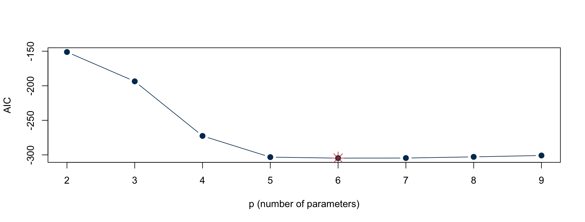
The red star marks the best subset size by AIC. Diminishing returns in AIC improvement beyond this point confirm a parsimonious model is appropriate.
set.seed(126)
fold <- sample(cut(seq(n), breaks = 10, labels = FALSE))
pse_cv <- matrix(NA, n, 8)
for (i in 1:8) {
vars_i <- which(rs_sum$which[i, -1])
for (j in 1:10) {
tmp <- lm(y ~ X[, vars_i], subset = (fold != j))
pred <- as.vector(X[fold == j, vars_i, drop = FALSE] %*%
coef(tmp)[-1]) + coef(tmp)[1]
pse_cv[fold == j, i] <- (y[fold == j] - pred)^2
}
}
cv_means <- colMeans(pse_cv, na.rm = TRUE)
round(cv_means, 4)[1] 0.2462 0.1654 0.0812 0.0608 0.0595 0.0597 0.0618 0.0628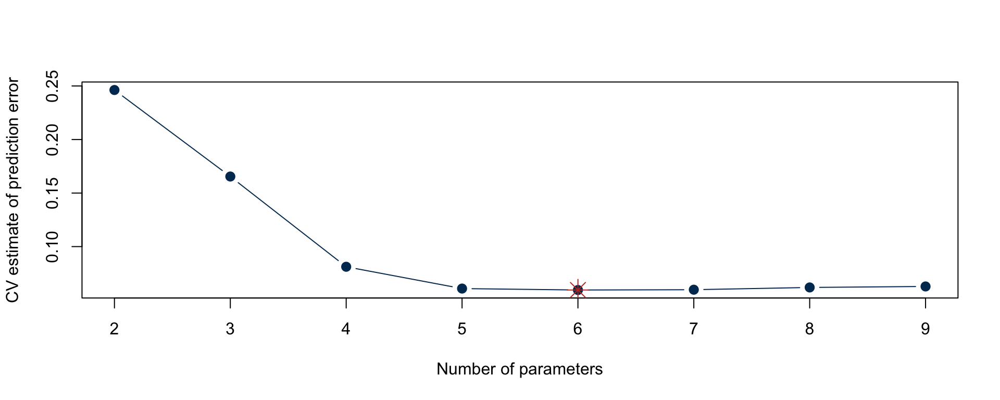
CV corroborates the AIC results — a model with ~4–5 parameters gives the lowest estimated prediction error.
LASSO adds a penalty on the \(\ell_1\) norm of the coefficients, shrinking some to exactly zero:
\[\min_{\boldsymbol\beta} \sum_{i=1}^n \!\left(y_i - \beta_0 - \textstyle\sum_j \beta_j x_{ij}\right)^2 + \lambda \sum_{j=1}^p |\beta_j|\]
Larger \(\lambda\) \(\rightarrow\) more shrinkage \(\rightarrow\) fewer non-zero coefficients.
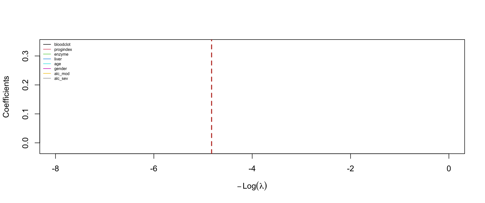
The red dashed line is the CV-optimal \(\lambda\). Variables whose paths hit zero to the right of this line are excluded from the LASSO model.
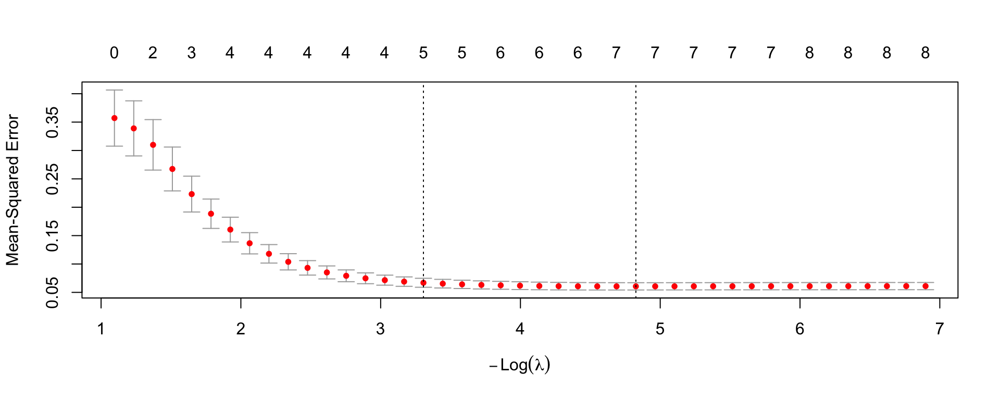
Left dashed line: \(\lambda_{\min}\) (lowest CV error). Right dashed line: \(\lambda_{\text{1se}}\) (simplest model within 1 SE of best). The number at the top is non-zero coefficient count.
OLS LASSO_min LASSO_1se
(Intercept) 3.8641 3.9311 4.1498
bloodclot 0.0886 0.0850 0.0737
progindex 0.0134 0.0130 0.0116
enzyme 0.0179 0.0175 0.0161
liver 0.0200 0.0149 0.0000
age -0.0029 -0.0024 -0.0006
gender -0.0253 -0.0066 0.0000
alc_mod 0.0092 0.0000 0.0000
alc_sev 0.3458 0.3235 0.2593LASSO shrinks small OLS coefficients toward zero. At \(\lambda_{\text{1se}}\), coefficients for weaker predictors may be exactly zero — automatic variable selection.
| Method | Variables retained |
|---|---|
| Backward F test | bloodclot, progindex, enzyme, age, alc_sev |
| AIC backward | see formula(fit_aic) |
| BIC backward | see formula(fit_bic) — fewest variables |
| Exhaustive (AIC) | 4–5 variable model |
| Cross-validation | Consistent with 4–5 variables |
| LASSO (\(\lambda_{\min}\)) | Most variables, shrunken |
| LASSO (\(\lambda_{\text{1se}}\)) | Aggressive shrinkage |
Consensus: bloodclot, progindex, enzyme, and alc_sev appear in every parsimonious model. These four predictors are robustly important for predicting log survival time.
Instead of two separate dummies alc_mod and alc_sev, encode alcohol use as a single factor with three levels. R will create the dummies automatically, using “None” as the reference category.
None Moderate Severe
48 36 24 Estimate Std. Error t value Pr(>|t|)
(Intercept) 3.7893 0.1118 33.8943 0.0000
bloodclot 0.0866 0.0071 12.2208 0.0000
progindex 0.0134 0.0011 12.6341 0.0000
enzyme 0.0182 0.0011 15.8515 0.0000
alcoholModerate 0.0152 0.0534 0.2845 0.7766
alcoholSevere 0.3430 0.0605 5.6680 0.0000Working on the log scale, a one-unit increase in a predictor multiplies the median survival time by \(e^{\hat\beta}\):
Each additional point in blood clotting score multiplies median survival by \(e^{0.0866} = 1.09\)
Each additional point in enzyme score multiplies median survival by \(e^{0.0182} = 1.018\)
Patients with severe alcohol use have median survival \(e^{0.343} = 1.41\times\) higher than non-drinkers, after adjusting for clinical markers
Moderate alcohol use shows little difference from non-drinkers (0.0152)
The positive severe-alcohol effect is a real pattern in the original surgical data — not necessarily a causal claim. Confounding (e.g., age or type of liver disease) may explain it.
par(mfrow = c(1, 2), mar = c(4, 4, 2, 1))
plot(fitted(fit_final), residuals(fit_final),
xlab = "Fitted values", ylab = "Residuals",
main = "Residuals vs Fitted",
pch = 19, col = "#003660", cex = 0.7)
abline(h = 0, lty = 2, col = "gray50")
qqnorm(residuals(fit_final), main = "Normal Q-Q",
pch = 19, col = "#003660", cex = 0.7, ylab = "Residuals")
qqline(residuals(fit_final))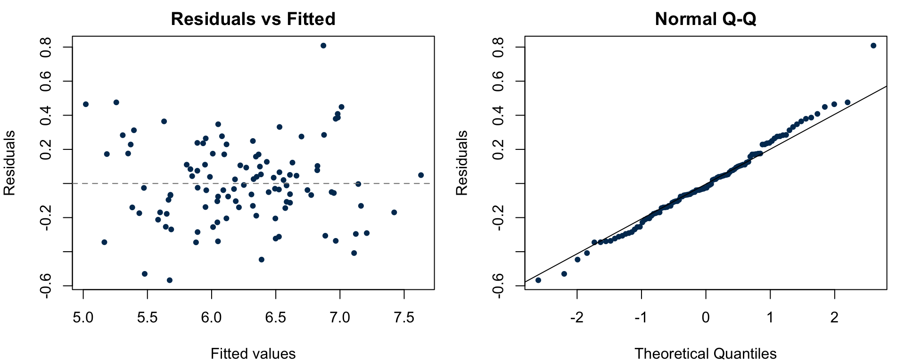
Residuals are approximately randomly scattered around zero with roughly constant spread. The Q-Q plot is close to the diagonal. The log transformation resolved the original assumption violations.
Using the surgical dataset from this lecture:
(a) Run forward selection using AIC, starting from the intercept-only model. Does it arrive at the same model as backward AIC?
(b) A classmate ran a stepwise selection procedure on fit_full and shared the first step of their output. Is this forward or backward selection? Explain using two features of the output.
Start: AIC = -246.12
log_surv ~ bloodclot + progindex + enzyme + liver + age + gender + alc_mod + alc_sev
Df Sum of Sq RSS AIC
- liver 1 0.00105 4.326 -247.98
- gender 1 0.03481 4.360 -247.03
- alc_mod 1 0.03997 4.365 -246.90
<none> 4.325 -246.12
- age 1 0.09804 4.423 -245.26
- alc_sev 1 0.42820 4.754 -237.81(c) Exponentiate the coefficient on alcoholSevere from fit_final. Write one sentence interpreting this value in terms of the original survival time (days).
(a) Forward selection:
log_surv ~ enzyme + progindex + bloodclot + alc_sev + age(b) This is backward selection. Two clues from the output:
The starting model contains all 8 predictors — backward selection begins at the full model and removes predictors one at a time. Forward selection would start from log_surv ~ 1 (intercept only).
Every candidate row is prefixed with − — each option represents removing a predictor. Forward selection would show + rows, since it considers adding one predictor at a time.
The first variable to drop is liver (lowest AIC after removal: −247.98 vs. current −246.12).
(c) exp(coef(fit_final)["alcoholSevere"]) \(\approx\) 1.41: patients with severe alcohol use have a median survival roughly 1.41× longer (in days) than non-drinkers with the same clinical test scores.
Transform first: Residual plots on the raw survival scale showed non-normality and non-constant variance. Box-Cox confirmed \(\lambda \approx 0\), so we modeled log(survival)
Explore before modeling: The scatter matrix and boxplots revealed which predictors seemed most strongly related to log survival before any formal selection
Full model as starting point: Fit all 8 predictors to understand the full picture, then apply variable selection to reduce complexity
Multiple selection methods — consistent conclusion: Backward F, AIC/BIC stepwise, exhaustive search (AIC), 10-fold CV, and LASSO all pointed to bloodclot, progindex, enzyme, and alc_sev as the core predictors
Encode factors properly: Using factor() for alcohol use produces cleaner code and allows a proper group-level F-test
Diagnose the final model: Always verify residual assumptions hold for the chosen model — not just the full model — after all transformations are applied
PSTAT 126 — Fall 2026 · UC Santa Barbara